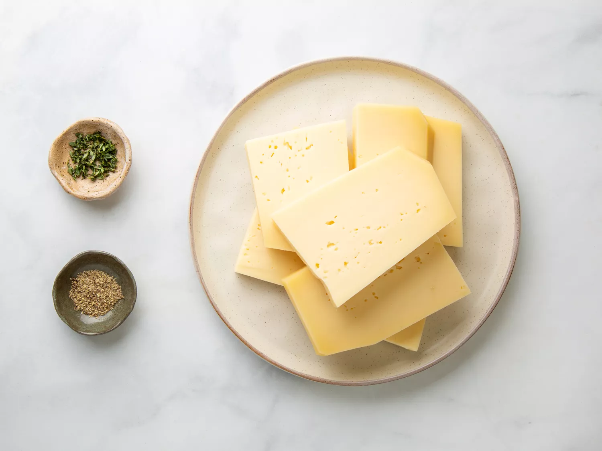
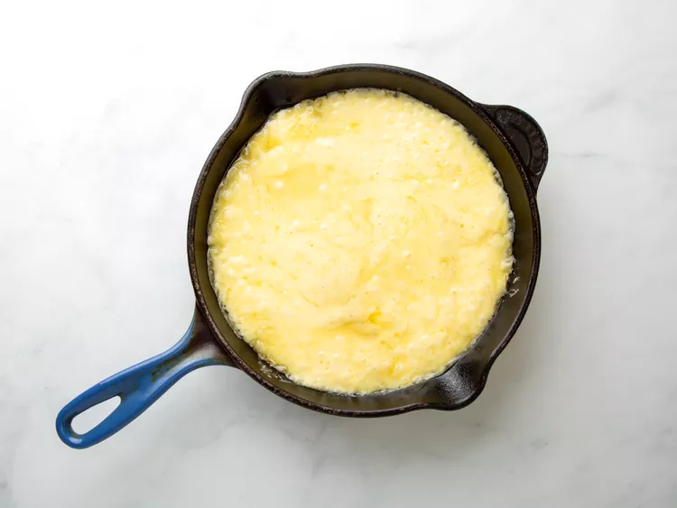

Raclette

CLes petites poêles en fonte ou antiadhésives permettent de servir facilement la raclette à un groupe. Pour cette fête, nous avons réchauffé des portions individuelles de fromage dans des poêles en fonte de 3 1/2 pouces. Attachez une serviette autour de la poignée de chaque poêle pour avertir les invités qu'elles sont chaudes. Servez avec des légumes racines d'hiver rôtis, du pain croustillant et des cornichons.
Ingredients:
- Du fromage
- Du pain
- Des cornichons
Instructions
- Rassemblez les ingrédients. Préchauffez le four à 350 degrés F (175 degrés C).

- Disposer le fromage à raclette dans six poêles en fonte de 3 à 4 pouces ou une de 8 à 10 pouces, en coupant des quartiers pour qu'ils s'adaptent si nécessaire.

- Faites cuire au four préchauffé jusqu'à ce que le fromage soit ramolli mais encore légèrement ferme au centre, 5 à 10 minutes. Utilisez un ventilateur pendant la cuisson ; le fromage est piquant !
